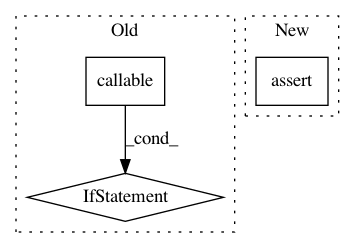

e6d53185b96cc39f2aaec5e86ae11ca0ac675b8a,python/tvm/auto_scheduler/workload_registry.py,,workload_key_to_tensors,#Any#,164
Before Change
value = WORKLOAD_FUNC_REGISTRY[name]
// "value" can be either a function or a list of tensors
if callable(value): // if it is a func
args = deserialize_args(workload[1:])
return value(*args)
// otherwise, it is a list of tensors
return value
def serialize_workload_registry_entry(workload_key):
After Change
workload = json.loads(workload_key)
name = workload[0]
value = WORKLOAD_FUNC_REGISTRY[name]
assert callable(value)
args = deserialize_args(workload[1:])
return value(*args)
In pattern: SUPERPATTERN
Frequency: 4
Non-data size: 3
Instances
Project Name: apache/incubator-tvm
Commit Name: e6d53185b96cc39f2aaec5e86ae11ca0ac675b8a
Time: 2021-01-25
Author: comaniac0422@gmail.com
File Name: python/tvm/auto_scheduler/workload_registry.py
Class Name:
Method Name: workload_key_to_tensors
Project Name: jonathf/chaospy
Commit Name: 999d2ff75431496c25c7967b990e6b7fc09bb858
Time: 2020-11-03
Author: jonathf@users.noreply.github.com
File Name: chaospy/spectral.py
Class Name:
Method Name: fit_quadrature
Project Name: bashtage/linearmodels
Commit Name: 51fb79d336a8052bbb47bdad7a80846b0001d5dd
Time: 2021-02-05
Author: kevin.k.sheppard@gmail.com
File Name: linearmodels/tests/asset_pricing/_utility.py
Class Name:
Method Name: get_all
Project Name: etal/cnvkit
Commit Name: 3e09de6748bdabcdaec4459619c36d64594bdbeb
Time: 2016-01-12
Author: eric.talevich@gmail.com
File Name: cnvlib/fix.py
Class Name:
Method Name: center_by_window